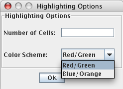

View/Edit Data (Control V)
After an expression file is created or merged, you can view and edit the data. This option should not be used often, but we did want you to have access to the ratio data if you deem it necessary. It is helpful if you want to verify steps or pick up a project after an extended period of time. From this table, you can choose to highlight the top and bottom n ratios in each column of your expression file. To do so, choose "Highlight Top and Bottom Ratios" from the Edit menu. In the options dialog that appears, enter how many high/low ratio cells you want to be highlighted, choose the color scheme, and click OK. For example, if you enter "10" in the box and choose red/green as your color scheme, the ten highest cells in each column will be highlighted in red, and the ten lowest cells in each column will be highlighted in green. This feature is useful for checking reproducibility between experiments.